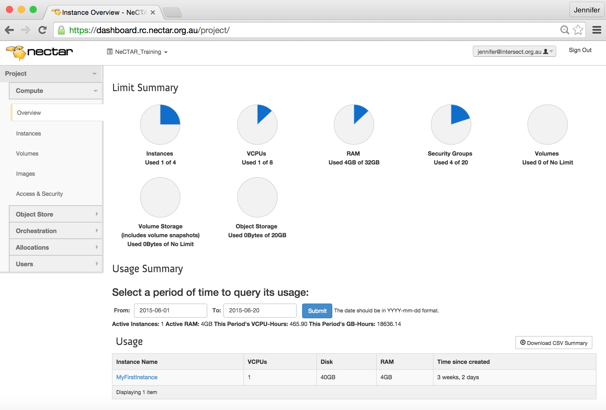
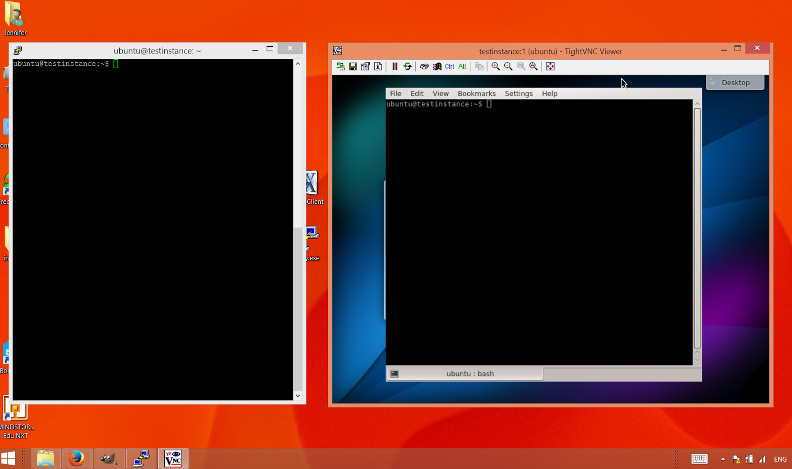

Module 5
The Research Cloud lifecycle
Sections of this module:
IntroductionConnecting and maintaining
Mitigating risks
Cleaning up
Getting support
Resource allocation requests
Summary
View all sections on one page (Printer friendly)
Connecting and maintaining
First of all, you will need to get onto the Research Cloud, which is fairly simple. Then, you will create an virtual machine, which we will also refer to as an instance. You can connect to your instance and while you or your collaborators are using it, you may track utilization of your resources. You should also perform a number of maintenance tasks while your instance is in use. We will discuss the processes involved in your virtual machine’s life cycle in this section.

An instance is a running virtual machine (VM) on the NeCTAR Research Cloud. Instances (VMs) running inside the Research Cloud are just like real-life machines but in a remote location. “Launching” an instance is like booting the computer, and shutting it down closes it. While an instance is shut down, it still exists — it may be rebooted any time. An instance can also be terminated, after which it is deleted (does not exist any more) and cannot be recovered, unless the state of it was saved in a snapshot before its termination.
Note: An instance is sometimes also one physical computer, but in the NeCTAR Cloud, all instances are virtual machines.
How to get onto the research cloud
In this section we will introduce the Dashboard which is used to manage your virtual machines. You will not have to follow the steps below now, because we will do this in detail in Module 7. This module is intended to give you just an overview of the tasks involved.
-
You can access the cloud by first logging on to the NeCTAR Dashboard on https://dashboard.rc.nectar.org.au using your favourite Web Browser.
 You can log in with and your university or research institution username and password.
You can log in with and your university or research institution username and password.
You may access the Research Cloud from any account associated with the Australian Access Federation. You can see whether your institution is part of this in the drop-down list on the Dashboard login window.
-
The Dashboard is used to start, copy and delete instances, and to manage your storage. Once you have logged on to the Dashboard, you can start setting up your VMs. We will do this in detail later in Module 7. 
-
You, and anyone else you allow access to the virtual machines, can then log in to them and use them just like regular servers.
-
Cloud VMs can be accessed using either the command line terminal, or a remote desktop. In the latter case, they can be used almost like a regular desktop computer. In Module 7 we will take a closer look at how to connect via an ssh terminal, and to a remote desktop.

Select an Image and launch an instance
Instances originate from Images. To create your virtual machine, you will have to select an Image.
An Image which can be used to launch instances captures the configuration of a computer system, including the Operating System, and stores it in an Image file. An Image can be a plain “off the shelf” Operating System or include software packages and configuration changes to suit a particular purpose (e.g. Web-serving).
NeCTAR has a few pre-configured Images that can make the set-up of a new instance much easier. They already have been checked for security, and are ready for you to use. In Module 7, we will use such a pre-configured Image to launch our first instance. You may also create your own Image — for more details, please refer you to the documentation at the NeCTAR support website.
You can use a pre-configured Image as a starting base. To suit your purposes, an instance may need some tweaking, configuration changes and installing of software. It is a good idea to make a copy of the instance you have configured for your purposes (e.g. by installing software). You can then start up a new instance from exactly this state in the future. This is useful in particular if you are experimenting and then wish to return to a previous state of your VM.
Copying the state of an instance is called taking a Snapshot of your instance. You can create Images from this Snapshot and use this image to start up new instances. This will save you having to re-do all the configuration steps (e.g. choosing OS, software, etc.). You can also share this Image with somebody else, so they can easily launch up an instance with the same configuration.
Taking a snapshot is very easy, you can do it from the Dashboard. In Module 9, we will discuss to do this.

The use of both terms “Snapshot” and “Image” can be a bit confusing sometimes. An “instance snapshot” is essentially an Image. The snapshot may internally have a few additional properties (information attached to it) than a regular image, but the technical details are not important in the context of this course.
Snapshotting works not only for an instance, but also for storage volumes. A volume Image can then be viewed as a “backup” of your data. This will be discussed in more detail in Module 9.
Virtual machine (VM) instances in the Research Cloud are available in standard sizes:
-
Small (1 core), Medium (2 cores), Large (4 cores), Extra-large or XL (8 cores), XXL (16 cores)
-
Each VM core has 4 GB of memory (RAM) and 30 GB of local disk storage per core, so an XL VM instance has 8 processing cores, 32 GB RAM and 240 GB of local disk storage, called instance storage. You can get access to more than only the instance storage, which we will look at in Module 6.
Tracking utilization
On the Dashboard, you can see the amount of resources you are using. You can also see how long your instances have been up and running.
 You may also want to monitor your virtual machine(s), i.e. keep track of CPU usage, memory usage, etc. You may also want to set up system alerts. The Dashboard does not provide any tools to do this; you will have to use tools for virtual machine monitoring. Module 10 will talks about VM monitoring.
You may also want to monitor your virtual machine(s), i.e. keep track of CPU usage, memory usage, etc. You may also want to set up system alerts. The Dashboard does not provide any tools to do this; you will have to use tools for virtual machine monitoring. Module 10 will talks about VM monitoring.
Housekeeping
Updates
Just as you need to regularly update your local office computer to ensure the newest security updates are installed, you also need to maintain your virtual machine. On Linux systems, there are command line tools which allow an easy update and upgrade of your system. At the time of writing, only virtual machines running Linux can be created on the NeCTAR cloud, so it will be easy to upgrade your system at regular intervals. We will discuss how to do this in Module 7.
Backups
Backups are an essential part of any IT infrastructure, especially when it comes to data storage. The NeCTAR cloud does not backup your data or your instance automatically. You will have to do this yourself. There are tools you may use for this, which we will discuss in Module 9.

 This work is licensed under a
This work is licensed under a